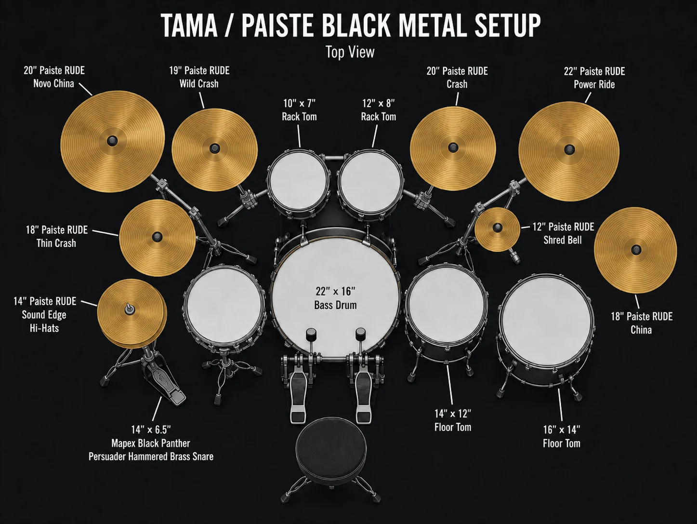

Drums
TAMA Starclassic Performer Series, maple and birch shells.
- 10" x 7" rack tom
- 12" x 8" rack tom
- 14" x 12" floor tom
- 16" x 14" floor tom
- 22" x 16" bass drum
Music
This page keeps the musical side of the site in one place: the setup, the records feeding my ears, and the darker ambition still pushing toward a future release built from precision, atmosphere, and force.
The current kit is built for force, speed, and clarity: enough attack to cut through dense music, enough control to stay articulate when everything gets fast.

TAMA Starclassic Performer Series, maple and birch shells.
Mapex Black Panther Persuader hammered brass snare.
Paiste RUDE across the main voice of the kit.
A rotating set of records and songs that keep the aggression, atmosphere, melody, and production standard sharp.
Choose a song from the list and it will load here.
This section is reserved for rehearsal footage, recorded sketches, performance clips, and anything that deserves a cleaner archive later.
Stills from practice, kit changes, and whatever moments feel worth keeping.
Demos, fragments, and rough captures that might become something larger later.
Performance clips, drum playthroughs, and eventually the first real visual traces of the project.